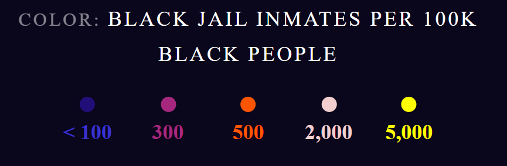

I didn't do a lot of research because I knew exactly what I wanted to make. However, here are the few websites I
explored to get a feel for what features to include for a fan website for movies/tv shows:
The One Ring.net
This is a fan website about the Lord of the Rings films. It was created by a group of fans in 1999
and it is still active today. It Bring[s] fans the latest news on the beloved figures involved in the making of
the wildly popular Lord of the Rings movies as well as the newest information available on upcoming
productions, Tolkien-centered events, new publications, and fan gatherings (TheOneRing.net).
From this website, I took inspiration to make my homepage have an image as a background.
Office Tally
This is a fan website about the tv show The Office. It was created by
Jennie Tan in 2006. On the
website, she writes blogs about the show and reviews its episodes, she also writes articles with the latest news
about the show and its cast.
From this website, I took inspiration to review my favourite episodes from the show. I only wrote about one of my
favourite episodes.
The Leaky Cauldron.org
This is a fan website is about the Harry Potter franchise. It was created in 2000 and is still active
today. It's an all-purpose site for the Harry Potter/ Wizarding World enthusiast, a destination for fan entertainment and
discussion(The Leaky Cauldron.org).
I like the fact that its images, colours and fonts match the theme of the franchise. I did this by adding navy blue and
yellow to my coloyr palette, which are colours used in Brooklyn Nine-Nine posters and promotional content.
[Figure 1: Screenshot of the data journalism project]
Project Overview
In this essay, I will do a critical analysis of the data journalism project titled, The Shape of Slavery. It was created
by Bill Rankin and Matt Daniels, who mapped out the data and wrote the code, respectively. The data journalism project was
published in January 2017 on The Pudding, which is a digital publication that creates visual essays with data (The
Pudding, 2024). The aim of the project is to show the connection between the rate of incarceration and the
population of slaves in the American South (Rankin and Daniels, 2017). This is illustrated through the data
visualisation and further expanded in its accompanying article.
Data Visualisation Techniques
In The Shape of Slavery the data visualisation technique used is a dot map. Dot maps or dot density maps use the
dot symbol to show the distribution of many related phenomena in geographical space (Synergy Codes, 2024).
In this data journalism project, different sized dots are used to represent the number of incarcerated people
across the United States as well as enslaved people in the deep South.
[Figure 2: Screenshot of the legend/key showing how population is represented]
Other data visualisation techniques include visual scalability, real-time interaction, and personalization (Bikakis in
Li, 2020, p.19). These will be expanded on in the later sections but in general, they speak to the visualisation being able
to effectively display large amounts of data, the user being able to interact with the visuals, and them being able to
change to how they view the data (Bikakis in Li, 2020, p.19). The reason behind these choices is that big data is
useful when it is represented in an accessible way (Nkosi, 2020). It is unfathomable how many people were enslaved and
incarcerated from 1790 to 2010; therefore, the visualisation helps the user make sense of these large numbers
through its use of colour, patterns and shape language.
Interactivity and User Engagement
The role of interactivity in this project is to communicate with the user and keep them engaged with the
information they are receiving. The interactions available to the user are clicking, hovering, and scrolling. In the
nav bar, when the user clicks inside a box, its area is filled with a white colour. This action also changes the information
displayed on the map, depending on the date that was selected. Also, when the user hovers over a date, the text
changes from white to blue.
[Figure 3: Screenshot showing the hover effect on the nav bar]
Hovering is also available on the map. When the user hovers over a dot, the area surrounding it gets
highlighted and information is given about the number of people the dot represents. While clicking and hovering are
based on what the user wants to do or see, scrolling is set up by the designers to automatically take
the user through the visualisation and its different parts. This means that with each scroll, the user will be able to
see the map change without having to click on the nav bar. These interactions are effective because they show
the user that their actions have an effect on the information they receive.
[Figure 4: Screenshot showing the hover effect on the map]
The impact of interactivity on user engagement is the creation of immersion and intuitiveness. The user feels involved and
present in the moment because they have the agency to make changes. The interactive elements are also intuitive, for example,
when the user sees the buttons on the nav bar, they know that they are clickable. Over the years, I have
engaged with several data visualisations and most of them were static bar graphs. In spite of the use of colour and
descriptive labelling, I did not feel like I understood what I was seeing or even cared about what it represents. This
is because the data was just given to me, and I was not able to interact with it or see it in a different light. Therefore,
the impact of interactivity on data interpretation and comprehension is that users are not just passive consumers,
but they are active in obtaining knowledge.
UI/UX Design Principles
The UI/UX design principles present in this data visualisation are clarity, simplicity, consistency, feedback,
usability, hierarchy, and accessibility (Direduryan, 2023). The information displayed in the visualisation, is clear
and easy to understand, also, the map, nav bar, and legends have simple designs. The colour scheme and layout are consistent,
even when the map’s data changes, and the user gets feedback each time they interact with the UI elements i.e. the text colour
changes when hovering on a date in the nav bar. The visualisation is usable, because it does not have any no errors
or unconventional interactions. In terms of hierarchy, the most important part of the project is the map, and it takes up the
most space on the page. Another important part is the nav bars and they also take up a large amount of space in the top left
corner. The least important part is the legends, and they are the smallest elements on the screen. Lastly, this
project is accessible because it has a dark background so it will be easy on the user’s eyes. It is also accessible to
users with different types of colour blindness (see Figures 5-8).
[Figure 5: Screenshot showing how people with Protanopia see the map][Figure 6: Screenshot showing how people with Achromatopsia see the map]
[Figure 7: Screenshot showing how people with Deuteranopia see the map][Figure 8: Screenshot showing how people with Tritanopia see the map]
These UI/UX techniques have significantly influenced the way I interacted with the data and informed my understanding of it. By
having a clear visual hierarchy, I knew what to focus on and what to ignore. By having a consistent layout and colour scheme
I was able to understand the relationship between the slave populations of 1860 and the population of incarcerated people in
2010. This is because the colours of the dots remained the same, so it was easy to build that connection, also, each
time the map’s data changed, the layout remained the same. In general, I found the project to be visually appealing and it was
able to understand the data, which gave me a good user experience.
Data-Driven Storytelling
This project combines narrative elements with data-driven storytelling in the way it represents the black population
and state prisoners for each year. Population is represented by the coloured dots and state prisoners are represented by white
circles on the map. As seen in Figures 10 and 11, the number of state prisoners was relatively low in 1910, with the highest
being 172, and the number kept increasing until 2010, where the highest was 868. This creates the narrative that the
states with the highest number of slaves, eventually had the highest black population, and it is where most prisoners are
found. This is further illustrated in Figures 12 and 13, where 12 shows the number of prisoners across races
and 13 shows the number of black prisoners and, in each one, the highest number of prisoners can be seen in the
South.
[Figure 9 & 10: Screenshots showing the number of prisoners in 1910 and 2010][Figure 11 & 12: Screenshots showing the number of prisoners and the number of black prisoners in 2010,
respectively]
Overall, the importance of narrative in communicating complex information is to make it easy for the user to remember. I was
able to remember and understand the significance of the data because the project represented it with colours and circles, and
I would not have been able to do so had I just read the accompanying article. This is because “by making the
data we want to show, relevant to our audience, it becomes a pivotal point in our story” (Knaflic, 2015, p.185).
Emotional Impact
The colour palette used in the data visualisation contributes to the serious tone of the project and the overall
message. Firstly, the background colour of the visualisation is navy blue, therefore, it sets up a dark tone or mood
for the user. In the legend, the colours blue, purple, orange, pink, and yellow represent the number of black
inmates. These colours, besides blue, are described as warm colours and they are conventionally used to denote danger.
Therefore, their use in this project, will show the user that they are representing something negative as opposed
to cool, pastel colours that might represent something light and positive. In a way, the designers [settled] for
establishing the context for an emotion rather than the emotion itself (Hassenzahl and Tractinsky, 2006, p.94). This
means that instead of expecting users to understand the severity of the numbers, they associated them with
colours so that users can make connections between their understanding of the colour, and the number it represents.

[Figure 13: Screenshot showing how inmates are represented on the map]
Conclusion
In the analysis of “The Shape of Slavery” I learnt that data visualisation is not just about displaying appealing visuals,
but it is also about constructing meaning or conveying a narrative. I also learnt that there should be a
clear relationship between the different elements i.e. the shapes, colours, numbers and the graph/map should
communicate with each other. These insights will be applied to my own data visualisation projects in the future by guiding
me not to spend too much time on aesthetics and actually focus on storytelling and meaning-making.
Hassenzahl, M. and Tractinsky, N. (2006) ‘User experience - a research agenda’, Behaviour & Information Technology,
25(2), pp. 91-97. doi: 10.1080/01449290500330331.
Knaflic, C.N. (2015). Storytelling with Data: A Data Visualization Guide for Business Professionals. Hoboken,
New Jersey: Wiley, pp.165-185. Chapter 7 - Lessons in storytelling.
This year, I learnt a lot about web development. When I started Interactive Media, I felt confident because I had prior knowledge
about HTML and CSS. However, in Semester 1, I realised that what I knew about making websites was very limited and at times
incorrect. I learnt that HTML files must be formatted with the correct semantic markup and my website is not just meant to look
pretty but it also needs to be functional, responsive, and accessible. In Semester 2, I learnt that the user is a very important
part of the design process. Everything I do, as the designer, should be aligned with the kind of experience I want users to have.
After working on my Brooklyn Nine-Nine fan website, I believe that I have grown in my skills as a designer and programmer. In
this essay I reflect on my design process, the challenges I faced, and overall, what I learnt about being a web developer.
Global Economics and Artistic Implications
When building my website, I prioritized two global economic factors: sustainability and accessibility. For sustainability, I made
sure that a majority of my images and videos have small file sizes. This is because having a small file size reduces the amount
of mobile data consumed by the website, which means that the user won’t have to spend lots of money to buy extra data. It also
helps the user save electricity because it reduces the amount of power that is consumed by their device. However, the implication
of this is that my images and videos will have lost a bit of visual quality.
For accessibility, people from all over the world will be able to find my website because I used Technical and On-Page Search
Engine Optimization (SEO). With Technical SEO my website loads relatively quickly, it has a secure URL scheme (https) and it's
fully responsive (Pol, 2023). I used On-Page SEO in my HTML files so that all images to have descriptive names, title tags and
alt tags. Also, in each HTML file I used metadata, header tags and correct semantic markup (Lyons, 2022). The implication of
this is that my website has a good layout which will remain consistent across multiple devices and web browsers. Altogether,
these techniques made my website globally sustainable and accessible.
UI/UX Decisions
Meaning-making
My website has a minimalist design. It uses only two fonts, has a simple, intuitive navigation, and I only used animations for
specific contexts such as, hover effects, glow effects and page flips. My website also uses margins and white space so that the
user is not overloaded by seeing too many elements on the screen. Furthermore, for my colour palette, I used four main colours,
navy blue, brown, yellow, and tan. The darker colours (blue and brown) are used for the headers and footers and the lightest
colour (tan) is used for the page backgrounds. This is so that the page content is visible and readable as well as to make the
different sections distinguishable from each other. Yellow is a light colour and at times visually inaccessible therefore, I made
sure not to overuse it and only use it for the logo and as an active page indicator on the nav menu. Altogether, these UI
elements will give the user a good experience because the website content will be accessible and understandable, and they will
find the website familiar when they notice things they have seen from other websites.
My data visualisations also have a good use of Information Architecture. The data in each graph is organised by colour, size and
category. This helps the user understand that if a data point is orange, it is related to the other orange ones or if a circle is
larger than the others, it represents a large amount of data. This is similar to the labels, tooltips, and keys. In my
scatterplot graph, the labels tell the user what each axis represents i.e. the y-axis has ratings and the x-axis has the number
of episodes in the series. The tooltips help the user make sense of the data. While going through the graph, the user can hover
over a dot and find out what episode it represents, what season it falls under, and what rating it has. The key then helps the
user make sense of the graph as a whole i.e. brown represents plot points for Season 1 and yellow represents Season 2 etc. Lastly,
my data visualisations also have a navigation system. Instead of having to look at the entire graph, users can search for an
episode number, a season, or a rating and that information will be highlighted. This means that the user will be able to make
sense of the graph, and the information presented to them without feeling confused or overwhelmed.
Engagement
I used bold colours for my homepage to capture the user’s attention and to make them eager to see more. On the other pages, I used
softer/lighter colours to avoid overstimulating the user with too many bold colours. On each page, I also added images to accompany
paragraphs. The images are meant to illustrate certain points made in the text such as diagrams or screenshots in the Design and
Theory pages. These keep the user engaged because if the user becomes desensitised from seeing lots of text, they will have
something more interesting to look at. With my data visualisations, users become engaged by the use of colour, the shape language
as well as other interactive features that will be expanded on in the next section. Overall, on my website, I keep users engaged
by piquing their interest and giving them a chance to take breaks from reading lots of text.
Interactivity
The entire website
Interactivity plays a huge role in my website. It allows users to be active participants instead of just passively consuming the
content. The first point of interaction that users can find is the nav menu. This gives the user the ability to click on a
specific tab and open the page that corresponds to that section. Before they even click on the tab, while they are still hovering,
the text element goes from white to grey. This shows them that their action was acknowledged and once they click on it, the text
turns yellow to indicate that they have successfully opened the page. The next points of interaction are the social media icons
found on the footer of each page. When the user hovers over an icon, it has a white glow and when they click on it; it opens a
social media page that corresponds to that icon. The next point of interaction is the newsletter subscription form found on the
About Page. Users are able to enter their information and submit the form to subscribe to my newsletter. While entering their
information, they will receive alerts so that they can fix any errors, and they will also be notified for a successful submission.
This interaction involves a lot of communication with the user which shows them that their actions are valued, and they can
affect change within the website.
The Data Visualisations
The last points of interaction are the buttons found in my bubble chart and the key from my scatterplot graph. Firstly, my bubble
chart has a “combine” and “split” button and these are used to split the bubbles (seasons) according to the number
episodes they have as well as move all the bubbles closer together, repectively. This is interactive because the user’s actions are
changing the chart. It also helps them interpret the data because if for some reason the user cannot see the colours, that
visually group the bubbles, the buttons help them make that connection. Lastly, in my scatterplot graph, the user is able to
hover on a circle in the key, and the plot points that correspond with it will be in colour while the rest of the graph has
reduced in opacity. This is useful because the graph has lots of dots and colours so being able to select which data to focus on
helps the user understand what they are seeing.
Challenges
Creating the Data Visualisations
The first challenge I faced when making my website was creating the data visualisations. This was really difficult because I was
used to following tutorials from class and I never got the time to practice on my own. I knew how to fetch data from the API and
the style the svg but I was unsure of how to actually create the visualisation. Therefore, to create the bubble chart and
scatterplot graph for Assignment 3, I relied heavily on YouTube videos and the code that we created from our tutorials in class.
After watching all these videos and referring back to the class content, I was able to create the third data visualisation
(heatmap) on my own. I did, however, refer to YouTube to learn how to add additional things such as the search field and how to
animate my data. This challenge taught me that practice is really important because the more I practice something, the better I
am when it’s time to actually do it.
Creatig a Narrative
The second challenge I faced was creating a narrative for my data visualisations. In my bubble chart for Assignment 3, I wanted to
show that Brooklyn Nine-Nine had lots of episodes. I did this by having bubble size represent seasons and their number of
episodes. I also added a split and combine button which brought the bubbles closer or apart from each other. Visually, the chart
made sense but there wasn’t really an emergent narrative. Therefore, for the final version of the chart, I decided to put these
buttons to use. When the split button is clicked, the bubbles, separate according to their ratings and when the combine button is
clicked, the bubbles with the same number of episodes move closer together. This creates the narrative that seasons with many
episodes have the highest ratings meaning that, the later seasons of Brooklyn Nine-Nine had lower ratings because they had fewer
episodes.
Full Responsive Design
The final challenge that I faced when developing my website was making it fully responsive. Generally, responsive design is not
difficult for me because I know how to use media queries and the developer tools. However, I used to find it easy because I could
only focus on three screen sizes. I had a preferred desktop and tablet size and for the mobile I used my phone’s specifications
so that I’ll be able to view my website from it. However, because we have to make our websites fully responsive, I knew that I
would have to do a lot of work. Therefore, I looked for techniques to make the process less tedious and more effective. I found
out that I can first reduce the size of the body so that everything within it can fit its new context. I can then reduce the
margins by 50% for tablets and 25% for phones. I also learnt that images should be set to 100% so that they can automatically
resize themselves (My website's responsiveness ends at 300px). Overall, these tips made my responsive design process easier and a
bit faster than before.
Professional Practices
After reflecting on my process and all the design decisions that I made, I firmly believe that my website aligns with professional
practices in international web development. According to a blog post from the Software Development company, TatvaSoft, the best
practices for professional web development are:
A Good Navigation System
Keeping Everything Separate - CSS, HTML, and JavaScript
Writing Smart Codes
Testing While You Build
Having Good Performance/Speed
Maintaining the Standards
Considering Compatibility Across Multiple Devices
Providing a Great UX (Sharma, 2022)
My website has met all of these requirements. I have a good navigation system that users will find intuitive. My HTML, CSS, and
JavaScript code are separated, and I also provided comments to explain what I wanted to do. While building my website, I kept
checking to see if things were working and I regularly uploaded my changes to GitHub. Moreover, my website content and images are
optimised so my site loads quickly. My website follows the conventions of a regular website such as having a logo and menu at the
top and a footer at the bottom, therefore, users will find it familiar. Lastly, my website is fully responsive so users from all
over the world will be able to use it. All of these come together to provide a good user experience, and this shows that my
website does align with professional practices for web development.